ai-introduction
Table of Contents
- 1. AI的概述
- 2. 机器学习的的流程
- 3. 统计学习
- 4. Algorithms
- 5. 距离
- 6. 正则化
- 7. 牛顿法
- 8. 频率学派和Bayes学派
1 AI的概述
1.1 AI, ML, DL的关系
Artificial Intelligence > Machine Learning > Deep Learning
人工智能的范围很宽，日常中的AI常常指的是机器学习（ML）和深度学习（DL）。
1.2 AI的特点
- 可解释性差
- 准确性很难100%
1.3 AI模型的解释
- 几何角度
- 概率角度
1.4 如果提高AI预测精度
- 优化模型参数
- 更改模型
- 做特征工程
- 增加数据样本量
1.5 AI与人类学习
统计学是正确的学习方式。
| 人类 | 机器 | |
|---|---|---|
| 学习方式 | 归纳 -> 演绎 | 从数据样本中归纳出模型，利用模型来进行预测 |
| 目的 | 抓住规律本质而不是表象 | 不仅仅是拟合数据，而是要泛化。 |
| 擅长 | 逻辑运算 | 数值运算 |
1.6 现状
| 应用层 | 互联网，安防，医疗，金融，运营商 |
| 接口层 | Tensorflow, Scikit-Learn, Spark MLlib |
| 算法层 | 卷积神经网络，循环神经网络，随机森林，svm，线性回归等 |
| 框架层 | Tensorflow |
| 基础层 | CPU与GPU集群，云平台 |
2 机器学习的的流程
2.1 数据的加载
2.1.1 numpy
import numpy as np data = np.load('data.npz')
2.1.2 pandas
import pandas as pd data = pd.read_csv('data.csv') data = pd.read_json('data.csv')
2.1.3 pyspark
from pyspark import SparkConf, SparkContext conf = SparkConf().setAppName('AppName') sc = SparkContext(conf=conf) data = sc.textFile('data.txt') from pyspark.sql import SparkSession spark = SparkSession.builder.appName('appName').getOrCreate() data = spark.read.format('libsvm').load('data.txt')
2.2 特征工程
重要：
不是为了特征工程而进行特征工程。
特征工程为了解决问题，所以当问题出现时才进行特征工程。
特征工程是以结果为导向的，
https://github.com/hackchyson/ai/tree/master/feature
2.2.1 问题：无用特征
目的：简化模型，提高精度
数据中类似id等的特征，未进行模型训练之前就可确定，该属性对模型是没有影响的。
2.2.2 问题：数据无法直接进行模型训练
目的：让算法能正常运行。
- 字符串
模型对字符串的支持不好，需要转成向量。
- onehot
from sklearn.preprocessing import Normalizer data = [[-1, 2], [-0.5, 6], [0, 10], [1, 18]] print('data: ', data) normalizer = Normalizer() normalizer.fit(data) print(normalizer.transform(data)) print(normalizer.transform([[2, 2]]))
output:
[[5 8 9] [5 0 0] [1 7 6] [9 2 4] [5 2 4] [2 4 7] [7 9 1] [7 0 6] [9 9 7] [6 9 1]] [0 0 1 0 0 1 3 3 2 1] [0]
- onehot
- 空值
空值使模型报错。
2.2.3 问题：模型调参无法提高
目的：简化模型，加速收敛，提高精度。
- 规范化
- standard
适合整体不太规整，方差较大的场景。
$$ z =\frac{ x - \mu}{\sigma} $$
\(\mu\) : mean of the sample
\(\sigma\) : standard deviation of the sample
from sklearn.preprocessing import StandardScaler data = [[0, 0], [0, 0], [1, 1], [1, 1]] print(data) scaler = StandardScaler() scaler.fit(data) print(scaler.transform(data))
- minmax
适合对存在极端大和小的点的数据。
\begin{equation} X_{std} = \frac{X - X.min(axis=0)}{X.max(axis=0) - X.min(axis=0)} \\ X_{scaled} = X_{std} \cdot (max -min) + min \end{equation}
max, min 是要缩放到的区域；
X.max, X.min 是样本某特征的最大值和最小值。
from sklearn.preprocessing import MinMaxScaler data = [[-1, 2], [0, 6]] scaler = MinMaxScaler() print(scaler.fit(data)) print(scaler.transform(data))
- normalize
服务于 大量 向量点乘运算的场景，防止因为向量值过大造成极端的影响。
主要思想：
对每个样本求其p范数，然后对该样本中每个元素除以该范数。(l1,l2范数）
from sklearn.preprocessing import Normalizer data = [[-1, 2], [-0.5, 6], [0, 10], [1, 18]] scaler = Normalizer() print(scaler.fit(data)) print(scaler.transform(data)) print(scaler.transform([[2, 2]]))
- binarizer
对于某些定量特征，包含的有效信息为区间划分，
例如只关心学习成绩的及格和不及格。
from sklearn.preprocessing import Binarizer X = [[ 1., -1., 2.],[ 2., 0., 0.],[ 0., 1., -1.]] binarizer = Binarizer().fit(X) # This method is just there to implement the usual API and hence work in pipelines. print(binarizer.transform(X))
- bucket
import numpy as np import pandas as pd x = np.random.randint(0, 100, 100) boundaries = [0, 60, 70, 80, 90, 100] # names = ['pass', 'd', 'c', 'b', 'a'] names = [1, 2, 3, 4, 5] score_bucket = pd.cut(x, bins=boundaries, labels=names, right=False) print(type(score_bucket)) # <class 'pandas.core.arrays.categorical.Categorical'> print(score_bucket.tolist()) print(score_bucket.size)
- standard
- 异常的点
2.2.5 问题：过拟合
目的：简化模型，提高精度。
- 特征选择
- filter
- chi2
from sklearn.feature_selection import SelectKBest from sklearn.feature_selection import chi2 from sklearn.datasets import load_iris iris = load_iris() print(iris.data[:3, :]) selector = SelectKBest(chi2, k=2).fit(iris.data, iris.target) data = selector.transform(iris.data) print(data[:3, :]) print(selector.scores_)
输出结果：
[[5.1 3.5 1.4 0.2] [4.9 3. 1.4 0.2] [4.7 3.2 1.3 0.2]] [[1.4 0.2] [1.4 0.2] [1.3 0.2]] [ 10.81782088 3.7107283 116.31261309 67.0483602 ]
- variance threshold
先要计算各个特征的方差，然后根据阈值，选择方差大于阈值的特征。
from sklearn.feature_selection import VarianceThreshold from sklearn.datasets import load_iris iris = load_iris() print(iris.data[0:5]) selector = VarianceThreshold(threshold=.5).fit(iris.data, iris.target) data = selector.transform(iris.data) print(data[0:5]) print(selector.variances_)
输出：
[[5.1 3.5 1.4 0.2] [4.9 3. 1.4 0.2] [4.7 3.2 1.3 0.2] [4.6 3.1 1.5 0.2] [5. 3.6 1.4 0.2]] [[5.1 1.4 0.2] [4.9 1.4 0.2] [4.7 1.3 0.2] [4.6 1.5 0.2] [5. 1.4 0.2]] [0.68112222 0.18871289 3.09550267 0.57713289]
- chi2
- wrapper
- RFE
RFE: recursive feature eliminate
from sklearn.feature_selection import RFE from sklearn.linear_model import LogisticRegression from sklearn.datasets import load_iris iris = load_iris() print(iris.data[0:5]) selector = RFE(estimator=LogisticRegression(), n_features_to_select=2).fit(iris.data, iris.target) data = selector.transform(iris.data) print(data[0:5]) print(selector.ranking_)
输出:
[[5.1 3.5 1.4 0.2] [4.9 3. 1.4 0.2] [4.7 3.2 1.3 0.2] [4.6 3.1 1.5 0.2] [5. 3.6 1.4 0.2]] [[3.5 0.2] [3. 0.2] [3.2 0.2] [3.1 0.2] [3.6 0.2]] [3 1 2 1]
- RFE
- embedded
from sklearn.feature_selection import SelectFromModel from sklearn.ensemble import GradientBoostingClassifier from sklearn.datasets import load_iris iris = load_iris() selector = SelectFromModel(GradientBoostingClassifier()).fit(iris.data, iris.target) print(iris.data[0:5]) data = selector.transform(iris.data) print(data[0:5]) print(selector.estimator_.feature_importances_)
输出：
[[5.1 3.5 1.4 0.2] [4.9 3. 1.4 0.2] [4.7 3.2 1.3 0.2] [4.6 3.1 1.5 0.2] [5. 3.6 1.4 0.2]] [[1.4 0.2] [1.4 0.2] [1.3 0.2] [1.5 0.2] [1.4 0.2]] [0.00612427 0.01303259 0.25968049 0.72116265]
- decision tree
- filter
- 降维
- PCA
PCA: Principal Component Analysis
from sklearn import datasets from sklearn.decomposition import PCA iris = datasets.load_iris() print(iris.data[:3, :]) X_reduced = PCA(n_components=3).fit_transform(iris.data) print(X_reduced[:3,:])
输出：
[[5.1 3.5 1.4 0.2] [4.9 3. 1.4 0.2] [4.7 3.2 1.3 0.2]] [[-2.68412563 0.31939725 -0.02791483] [-2.71414169 -0.17700123 -0.21046427] [-2.88899057 -0.14494943 0.01790026]]
- PCA
2.2.6 问题：欠拟合
目的：使模型复杂化，提高精度。
- 特征扩展
- onehot
import numpy as np from sklearn.preprocessing import OneHotEncoder enc = OneHotEncoder() arr = np.arange(12).reshape([4, 3]) print(arr) enc.fit(arr) print(enc.n_values_) print(enc.feature_indices_) print(enc.transform([[0, 1, 2]]).toarray())
输出：
[[ 0 1 2] [ 3 4 5] [ 6 7 8] [ 9 10 11]] [10 11 12] [ 0 10 21 33] [[1. 0. 0. 0. 1. 0. 0. 0. 1. 0. 0. 0.]]
import pandas as pd df = pd.DataFrame({'A': ['a', 'b', 'a'], 'B': ['b', 'a', 'c'], 'C': [1, 2, 3]}) df_dummies = pd.get_dummies(df, prefix=['col1', 'col2']) print(df_dummies)
output:
C col1_a col1_b col2_a col2_b col2_c 0 1 1 0 0 1 0 1 2 0 1 1 0 0 2 3 1 0 0 0 1
- polynomial
\(a,b -> 1, a, b, a^2, ab, b^2\)
from sklearn.preprocessing import PolynomialFeatures import numpy as np X = np.arange(4).reshape(2, 2) print(X) poly = PolynomialFeatures(2) print(poly.fit_transform(X))
output:
[[0 1] [2 3]] [[1. 0. 1. 0. 0. 1.] [1. 2. 3. 4. 6. 9.]]
- onehot
2.3 模型训练
2.3.1 数据观察
观察数据样本量，特征量，类型，是否有空值，最大最小值，均值等
pd.set_option('display.max_columns', None) # to show all the columns data = pd.read_csv('data.csv') data.columns data.info() data.describe() data['column name'].value_counts() data.plot()
2.3.2 模型选择
可以使用LR模型建立baseline，再尝试不同算法。
准确度依次下降的如下算法：
2.3.3 参数优化
2.4 使用模型
2.4.1 sklearn
from sklearn.linear_model import LogisticRegression from sklearn.externals import joblib lr = LogisticRegression() # train... # save joblib.dump(lr, 'lr.model') # load lr_load = joblib.load('lr.model')
2.4.2 tensorflow
import tensorflow as tf sess = tf.Session() # train... # save saver = tf.train.saver() saver.save(sess, 'model_path') # load saver.restore(sess, 'model_path'))
3 统计学习
3.1 基于概率的信任
假设抛硬币，抛了一次，正面向上，不要信任正面向上的概率为1，而是信任，以一定概率，正面向上的概率为1；
抛了两次硬币，一正一反，不要信任正面向上的概率为0.5，而是信任，以一定的概率，正面向上的概率为0.5；
量化为如下公式(Hoeffding Inequality)：
$$
P(|v - \mu| > \epsilon) \le 2exp \left (-2\epsilon^2N \right )
$$
\(v\) 为的统计值；
\(\mu\) 为真实值；
\(N\) 为样本量；
\(\epsilon\) 为误差；
3.2 为什么用统计学？
由基于概率的信任可知，我们得到的规律不一定是正确的，而已以一定概率正确而已。
由Hoeffding Inequality可得大数定律：
当试验次数足够多时，事件出现的频率无限接近于该事件发生的概率。
所以应用统计学，使我们的结论更接近客观世界的规律。
3.3 什么是学习？
Herbet Simon:
如果一个系统能通过执行某个过程改进它的性能，这就是学习。
3.4 什么是统计学习？
基于数据，构建统计模型，并运用模型对数据进行预测与分析。
3.5 统计学习三要素
3.5.1 假设空间
映射关系的集合。也可称之为模型。比如：
- 神经网络
- 随机森林
- SVM
- 线性回归
3.5.2 优化目标
误差的衡量。
- 损失函数
监督学习是在假设空间中选择模型$f$，对于给定的输入\(X\) ，给出相应的预测输出\(f(X)\) 。
预测值\(f(X)\) 和真实值$Y$可能一直也可能不一致，即有所损失，用损失函数来量化损失。
常用损失函数：
0-1损失函数：
$$ L(Y,f(X)) = \begin{cases} 1, & Y \ne f(X) \\ 0, & Y = f(X) \end{cases} $$
平方损失函数：
$$ L(Y,f(X)) = (Y-f(X))^2 $$
绝对损失函数：
$$ L(Y,f(X)) = |Y-f(X))| $$
对数损失函数：
$$ L(Y,f(X)) = -log P(Y|X) $$
- 经验损失函数
给定数据集：
$$ T = \{(x_1,y_1),(x_2,y_2),\cdots,(x_n,y_n)\} $$
模型\(f(X)\) 关于训练数据集的平均损失称为经验损失(empirical loss)：
$$ R_{emp}(f) = \frac{1}{n} \sum_{i=1}^n L(y_i,f(x_i)) $$
期望损失\(R_{exp}(f)\) 是模型关于XY联合分布的期望损失；经验损失\(R_{emp}(f)\) 是模型关于训练样本的平均损失。
根据大数定律，当样本容量趋于无穷大时，经验损失等于期望损失。
- 结构损失函数
以\(R_{emp}(f)\) 来代替\(R_{exp}(f)\) 有一个问题，就是样本容量，
在样本容量较小的情况下，容易产生过拟合现象。
结构损失函数就是在经验损失函数上加正则化项，
\begin{equation} R_{reg}(f) = \frac{1}{n} \sum_{i=1}^n L(y_i,f(x_i)) + \lambda J(f) \end{equation}
即，本样本无法代表规律本身，而是对规律本身的一个修正。（频率学派和贝叶斯学派）
3.5.3 求解算法
如何使优化目标求得最优值。
- 梯度下降法
- 牛顿法
4 Algorithms
4.1 LMS (least mean square)
特点：使用均方差作为判断依据。（损失函数）
$$
x为输入矩阵，\theta 为权重矩阵，h_\theta (x)预测输出，y为真实输出，J(\theta) 为损失函数，
\alpha 为学习率
$$
$$
J(\theta) = \frac{1}{2}(h_\theta(x) - y)^2
$$
梯度下降法求解最优解。
$$
\theta_j = \theta_j - \alpha\frac{\partial}{\partial\theta_j}J(\theta)
$$
$$
\frac{\partial}{\partial\theta_j}J(\theta) = \frac{\partial}{\partial\theta_j} \frac{1}{2}(h_\theta(x) - y)^2 \\
= (h_\theta(x) - y)\frac{\partial}{\partial\theta_j}(h_\theta(x) - y) \\
= (h_\theta(x) - y)\frac{\partial}{\partial\theta_j}(\sum_\limits{i=1}^{n}\theta_ix_i-y) \\
= (h_\theta(x) - y)x_j
$$
对于单个样本i
$$
\theta_j = \theta_j + \alpha(y^{(i)} - h_\theta(x^{(i)}))x_j^{(i)}
$$
4.2 KNN
k-nearest neighbors
核心思想：在未知目标特性的前提下，通过其周围事物的特性来作为判别目标特性的标准。
4.2.1 三个要素：
- k值的选择，即多少个事物作为判断标准（过小容易过拟合，过大容易欠拟合）
- 距离的度量，即选用什么标准来度量距离
- 决策规则，即在最近临事物特性确定的情况下，怎么确定目标特性。（分类，一般使用多数投票；回归，一般使用均值）
4.2.2 实现：
- 暴力搜索
sklearn使用这个实现的
- KD树(k-dimention)
KD树，是在欧几里得空间点的结构。是一种空间二分树。
在开始对测试进行分类前，先建立模型KD树。
例子：
二维样本6个，{(2,3)，(5,4)，(9,6)，(4,7)，(8,1)，(7,2)}。
KD书的建立：
- 选取特征方差最大的k作为根节点
- 特征k中的中位数middle作为划分点，小于middle的进入左子树，大于等于middle的化入右子树（或者轮流选取坐标轴切分）
- 重复1-2
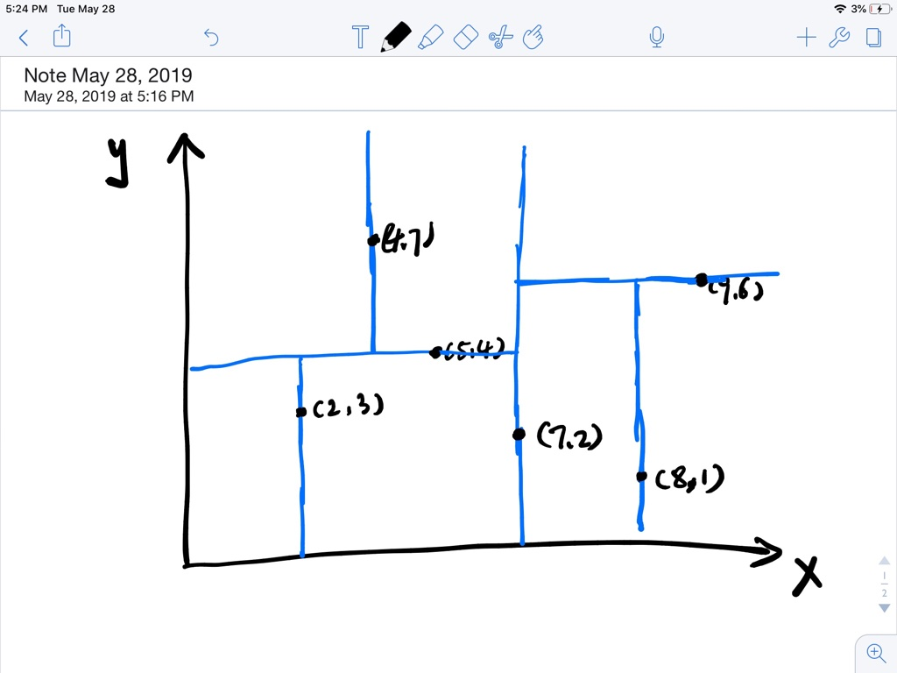
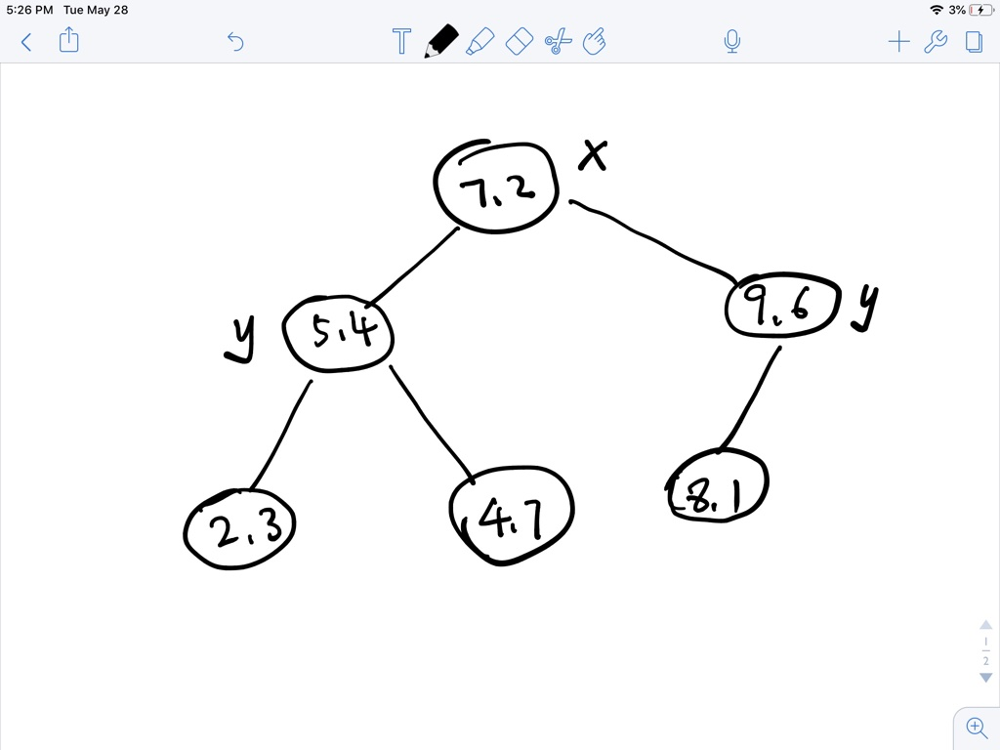
KD树搜索：
如查找点为（2，4.5）。先进行二叉查找，先从（7,2）查找到（5,4）节点，在进行查找时是由y = 4为分割超平面的，
由于查找点为y值为4.5，因此进入右子空间查找到（4,7），形成搜索路径<（7,2），（5,4），（4,7）>，
取（4,7）为当前最近邻点，计算其与目标查找点的距离为3.202。然后回溯到（5,4），计算其与查找点之间的距离为3.041。
以（2，4.5）为圆心，以3.041为半径作圆。可见该圆和y = 4超平面交割，所以需要进入（5,4）左子空间进行查找。
此时需将（2,3）节点加入搜索路径中得<（7,2），（2,3）>。
回溯至（2,3）叶子节点，（2,3）距离（2,4.5）比（5,4）要近，所以最近邻点更新为（2，3），最近距离更新为1.5。
回溯至（7,2），以（2,4.5）为圆心1.5为半径作圆，并不和x = 7分割超平面交割。
至此，搜索路径回溯完。返回最近邻点（2,3），最近距离1.5。
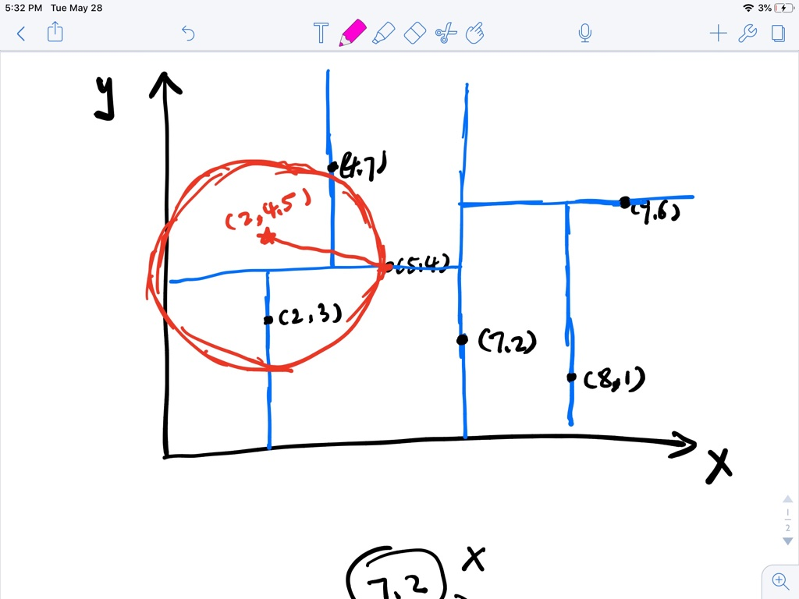
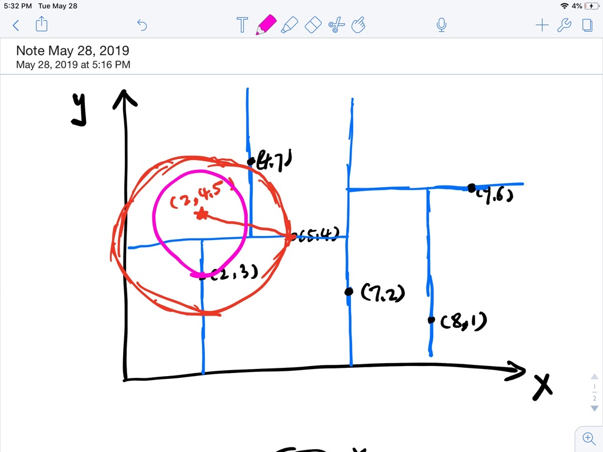
- 选取特征方差最大的k作为根节点
- 球树
4.2.3 优缺点
优点：
- 既可以用来做分类也可以用来做回归
- 简单易于理解
- 新数据可以直接加入数据集而不必进行重新训练
缺点：
- 向量的维度越高，欧式距离的区分能力就越弱
- 样本平衡度依赖高
- 向量的维度越高，欧式距离的区分能力就越弱
- 不适合大样本量（计算距离花费时间较长）
4.3 Naive Bayes （朴素贝叶斯）
4.3.1 理论推导
bayes公式：
用来描述两个条件概率之间的关系。
即当你无法判断一个事物的的本质的时候，可以依靠与该事物相关的事件来判断该事物本质属性的概率。
用数学表达就是：支持某项属性的事件发生的越多，则该属性成立的可能性就越大。
bayes公式的变体：
多特征值的变体：（符号无关性质得出）
naive（朴素）的意思是假设Ai之间相互独立，则得到
进一步以机器学习的数据推导贝叶斯分类器：
假设A有n个属性，B有m个类别，贝叶斯分类器就是计算出概率最大的那个分类。
$$
P(B_{1}|A_{1}\cdots A_{n}) = \frac{P(A_{1}|B_{1})\cdots P(A_{n}|B_{1}) \cdot P(B_{1})}{P(A_{1}\cdots A_{n})}
$$
$$\vdots$$
$$
P(B_{m}|A_{1}\cdots A_{n}) = \frac{P(A_{1}|B_{m})\cdots P(A_{n}|B_{m}) \cdot P(B_{m})}{P(A_{1}\cdots A_{n})}
$$
由于有相同的分母\(P(A_{1}\cdots A_{n})\),可以省去，则为：
$$
P(B_{1}|A_{1}\cdots A_{n}) = P(A_{1}|B_{1})\cdots P(A_{n}|B_{1}) \cdot P(B_{1})
$$
$$\vdots$$
$$
P(B_{m}|A_{1}\cdots A_{n}) = P(A_{1}|B_{m})\cdots P(A_{n}|B_{m}) \cdot P(B_{m})
$$
选取其中最大的概率为该分类，其中等式右边的概率可以根据样本计算出来。
4.3.2 Gaussian Naive Bayes
在朴素贝叶斯分类器的基础上，假设A属性的分布符合高斯分布，简化了概率的计算，可以高斯公式来计算个属性的概率。
高斯分布：
$$
\frac{1}{\sqrt{2\pi\sigma^{2}}}exp({-\frac{(x-\mu)^2}{2\sigma^2}})
$$
其中，\(\mu\) 为均值， \(\sigma\) 为标准差。
4.3.3 优缺点
优点：
- 发源于古典数学理论，有着坚实的数学基础，以及稳定的分类效率。
- 是对小规模的数据表现很好，能个处理多分类任务，适合增量式训练（即可以实时的对新增的样本进行训练）
- 对缺失数据不太敏感
缺点：
- 由于使用了样本属性独立性的假设，所以如果样本属性有关联时其效果不好。
- 需要知道先验概率，且先验概率很多时候取决于假设，假设的模型可以有很多种，因此在某些时候会由于假设的先验模型的原因导致预测效果不佳。
- 分类决策存在错误率（？）
- 对输入数据的表达形式很敏感（？）
4.3.4 常用领域
分本分类
4.4 SVM (support vector machine)
SVM是一种二分类模型。
基本模型是定义在特征空间上的间隔最大的线性分类器。
SVM构建由简至繁的模型：
- 线性可分支持向量机(linear support vector machine in linearly separatable case)
- 线性支持向量机(linear support vector machine)
- 非线性支持向量机(non-linear support vector machine)
4.4.1 线性可分支持向量机
SVM是在特征空间上进行的。（将输入空间映射到特征空间）
假定给定特征空间上的训练数据集：
$$ T = \{ (x_1,y_1),(x_2,y_2),\cdots,(x_n,y_n) \} $$
一般地，当训练数据集线性可分时，存在无穷个分离超平面可将两类数据正确分开。
- 目标函数
假设分离超平面为：
$$ w^Tx + b = 0 $$
对应的分类决策函数为：
$$ f(x) = sign(w^Tx + b)$$
其中sign为符号函数：
$$ sing(x) = \begin{cases} +1, & x \ge 0 \\ -1, & x < 0 \end{cases} $$
- 损失函数
一般来说，一点距离超平面距离的大小可表示分类预测的置信度。
距离越大，置信度越大。
间隔最大化意味着超平面以最大的置信度对训练数据进行了分类。
为了计算方便，规定法线方向的样本为正样本，分类为+1，
法线反方向的样本为负样本，分类为-1.
点\((x_i,y_i)\) 被超平面\((w,b)\) 分类时，点\(x_i\) 与超平面\((w,b)\) 的距离为：
$$ d_i = \frac{y_i(wx_i + b)}{||w||} $$
其中\(||w||\) 为\(l2\) 范数：\(\sqrt{w_1^2 + w_2^2 + \cdots + w_n^2}\)
当\((x_i,y_i)\) 被正确分类时，\(d_i\) 为正值，被错误分类时，\(d_i\) 为负值。
自己尝试了损失函数为:
$$ L(f) = - \sum_{i=1}^n \frac{y_i(wx_i+b)}{||w||} $$
其中负号是为了将求极大值转化为求极小值。
但这个损失函数存在着一个问题，就是在解的不唯一性，分离超平面的平移无法限制。
设\(d\) 为样本集中，样本点距离超平面的最小值：
$$ d = \min\limits_{i \in [1,n]}d_i $$
求最大间隔超平面的问题变为如下约束最优化问题：
\begin{equation} \label{svm} L(f) = \max\limits_{w,b}d \\ s.t. \quad d_i \ge d , \quad i \in [1,n] \end{equation}
如果\(w,b\) 分别变为\(\lambda w,\lambda b\) ，带入d的距离公式，可知距离并不改变，
\begin{equation} \label{svm2} L(f) = \max\limits_{w,b} \frac{1}{||w||} \\ s.t. \quad \frac{y_i(wx_i+b)}{||w||} \ge \frac{1}{||w||} , \quad i \in [1,n] \end{equation}
对目标函数的优化并没有影响，就是说，它产生了一个等价的最优化问题，
于是，取\(y_i(wx_j+b)=1\) ，其中\(j\) 表示d取最小值的样本点，则最优化问题\((\ref{svm})\) 变为:
简化为：
\begin{equation} \label{svm3} L(f) = \max\limits_{w,b} \frac{1}{||w||} \\ s.t. \quad y_i(wx_i+b) - 1 \ge 0 , \quad i \in [1,n] \end{equation}
注意到最大化\(\frac{1}{||w||}\) 和最小化\(\frac{1}{2}||w||^2\) 是等价的，于是得到如下最优化问题：
\begin{equation} \label{svm4} L(f) = \min\limits_{w,b} \frac{1}{2}||w||^2 \\ s.t. \quad y_i(wx_i+b) - 1 \ge 0 , \quad i \in [1,n] \end{equation}
\((\ref{svm4})\) 为最终的损失函数。
- 求解算法
4.5 Decision Tree
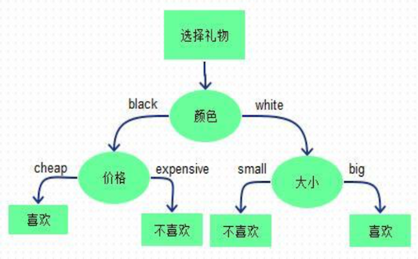
从形状上看，是一颗倒着的树。
过程：
现在有三个属性，颜色，价格，大小，
每次选择一个特征进行分类，重复这个过程，直到分类完成。
所以，决策树最重要的就是首先以那个属性划分，再以哪个属性划分，划分的结果最好。
这就需要对划分结果进行量化。
常见量化划分结果的好坏的有：ID3, C4.5, CART.
假设有数据集D，D中数据属于k个类别。
用于下面公式的推导。
4.5.1 id3
measure: information gain
第1步： 计算数据集D的信息熵
$$
H(D) = -\sum_{i=1}^{k} P(i) log_{2}P(i)
$$
其中，\(P(i)\) 为数据i类的概率。
第2步： 假设以A特征进行分类，分为n个子数据集，计算分类后数据集的信息熵
$$
H(D|A) = -\sum_{i=1}^{n} \frac{|D_i|}{|D|} H(D_i)
$$
其中，D所有样本个数，\(D_{i}\) 为第i个自己样本个数。
添加系数\(\frac{D_i}{D}\) 是为了消除样本数量不一致。
第3步： 差值为信息增益
$$
g(D,A) = H(D) - H(D|A)
$$
缺点：通过计算公式我们可知，如果某个特征的值比较多，那么以这个特征划分后的信息增益一般会比较大。
4.5.2 c4.5
solve the problem of id3
同id3相比，第1，2步不变，第3步以信息增益率来衡量
首先增加惩罚项，即如果你的特征中值比较多，那么除的数也比较大。
惩罚项：
$$
penalty(D,A) = \sum_{i=1}^{n} \frac{|D_i|}{|D|} log_{2}\frac{|D_i|}{|D|}
$$
信息增益率：
$$
gr(D,A) = \frac{g(D,A)}{penalty(D,A)}
$$
4.5.3 cart
cart: Classification And Regression Tree
从名字上可以看出，以CART为度量来生成的决策树是支持回归问题的。
cart使用Gini来度量划分结果的好坏。
第1步： 计算数据集D的Gini系数
$$
Gini(D) = \sum_{i=1}^{k} P(i)(1-P(i)) = 1- \sum_{i=1}^{k} P(i)^2
$$
第2步： 计算数据集以A特征进行划分后的Gini系数
$$
Gini(D|A) = \sum_{i=1}^{n} \frac{|D_i|}{|D|} Gini(D_i)
$$
第三部： 计算Gini差值
由于CART可以处理离散和连续特征值问题，计算的方式有所区别。
离散： 直接计算就可以。
$$
g(D,A) = Gini(D) - Gini(D|A)
$$
连续：
因为连续属性的可取值数目不再有限，因此不能像前面处理离散属性枚举离散属性取值来对结点进行划分。因此需要连续属性离散化。
常用的离散化策略是二分法，下面以二分法对连续问题离散化。
在给定数据集D上有连续属性A，假设a在D上出现了n个不同的取值，
先把这些值从小到达排序，记为：\({a_1 , a_2 , \cdots , a_n}\) ，
基于切分点t可将数据集D分为\(D_{t}^{-}\) 和\(D_{t}^{+}\) ，
其中，\(D_{t}^{-}\) 是包含那些在A属性上取值不大于t的样本，
\(D_{t}^{+}\) 为包含那些在a属性上取值大于t的样本。
显然，对于相邻的属性取值\(a^i\) 和\(a^{i+1}\) 来说，
t在区间\([a^i , a^{i+1})\) 中任意取值所产生的划分结果相同。
以取中值为例，对连续属性a，可以考察包含n-1个元素的候选划分点的集合
$$
T_a = \left \{ \frac{a^i + a^{i+1}}{2} , \ \ 1 \le i \le n-1 \right \}
$$
然后，就像处理离散属性值那样来考虑这些切分点，选择最优的划分点进行样本集合的划分。
$$
g(D,A) = \max_{t \in T_a} g(D,A,t) = \max_{t \in T_a} \left ( Gini(D) - \sum_{\lambda \in \{-,+\}} \frac{|D_{t}^{\lambda}|}{|D|} Gini(D_{t}^{\lambda}) \right )
$$
4.5.4 剪枝
放任生长容易造成过拟合
4.5.5 损失函数
所有叶节点交叉熵的累加
4.5.6 正则化
剪枝
4.5.7 Engineering
from sklearn.tree import DecisionTreeClassifier from sklearn.tree import DecisionTreeRegressor
4.5.8 优缺点
优点：
- 易于理解
- 能够同时处理数据型和常规型属性。
- 效率高。决策树只需要一次构建，反复使用，每一次预测的最大计算次数不超过决策树的深度。
- 速度快。计算量相对较小, 且容易转化成分类规则。
- 适合高维数据
缺点：
- 当类别太多时，错误可能就会增加的比较快。
- 在处理特征关联性比较强的数据时表现得不是太好
- 决策树的结果可能是不稳定的，因为在数据中一个很小的变化可能导致生成一个完全不同的树，这个问题可以通过使用集成决策树来解决
- 树的深度过深时，容易造成过拟合
4.6 Random Forest
4.6.1 特点
- 较高的准确率
- 能有效运行在大数据集上
- 能处理高纬特征输入
- 能评估各个特征在分类问题上的重要性
4.6.2 构建
- 原始数据集为D，随机有放回的抽取k个子数据集，生成k棵分类树。
- 每个样本特征纬度为M，从M个特征中选取m个子特征集(m<<M)，每次树进行分裂时，从这m个特征中选取最优的。
- 每棵树最大程度生长。
- 综合。如果是离散问题，通过投票选择最优解。如果是连续问题，去期望值。
4.6.3 Engineering
from sklearn.ensemble import RandomForestClassifier from sklearn.ensemble import RandomForestRegressor
4.7 Boost
boost本义为 提高，促进，改善。
boost算法就是在原有算法的基础上，进行调整，改善。
4.7.1 DONE adaboost
ada: adapt
kernel: weight adapt
核心思想：权值调整
- 算法原理
假设样本数据集为D，有n个样本，每次训练（就是迭代一次）产生分类器H，共迭代了t次，
产生了\(H_1 ,H_2 , \cdots , H_t\) 个分类器，第一次迭代时，每个样本的权重都相同，为\(\frac{1}{n}\) 。
x表示样本特性，y表示类别。
- 第一次训练
以\(W_{1i}\) 表示第一次训练，第i个样本的权重。
$$ D_1 = (W_{11} , W_{12} , \cdots , W_{1n}) $$
训练完毕，得到分类器\(H_1\) ，该分类器的将样本x分错的概率为：
\begin{equation} \varepsilon_1 = \frac{\sum\limits_{i=1}^{n} (H_1(x_i) \ne y_i)}{n} \end{equation}
该分类器的权重\(\alpha_1\) 为：
$$\alpha_1 = \frac{1}{2} ln(\frac{1 - \varepsilon_1}{\varepsilon_1})$$
- 第二次训练
$$ D_2 = (W_{21} , W_{22} , \cdots , W_{2n}) $$
\begin{equation} W_{2i} = \left \{ \begin{matrix} W_{1i} , \ \ \ if \ y_i = H_1(x_i) \\ W_{1i} \varepsilon_1 , \ \ \ if \ y_i \ne H_1(x_i) \end{matrix} \right. \end{equation}
- 第t次训练
$$ D_t = (W_{t1} , W_{t2} , \cdots , W_{tn}) $$
\begin{equation} W_{ti} = \left \{ \begin{matrix} W_{ti} , \ \ \ if \ y_i = H_{t-1}(x_i) \\ W_{ti} \varepsilon_{t-1} , \ \ \ if \ y_i \ne H_{t-1}(x_i) \end{matrix} \right. \end{equation}
- 综合所有分类器
$$ H(x) = sign \left ( \sum\limits_{i=1}^t \alpha_t H_i(x) \right ) $$
- 第一次训练
- Engineering
from sklearn.ensemble import AdaBoostClassifier from sklearn.ensemble import AdaBoostRegressor
4.8 Linear Regression
本义： 回归，退化，回到从前。
即，根据当前样本，找简化的规律。
regression的规律为线的形状。
这样的规律有很多，哪个才是好的呢？ 这就是评判标准，使评判标准最好的就是最适合的规律。
在ai中这个评判标准常常指loss function.
4.8.1 目标函数
目标函数就是样本中隐含的规律，用该直线来表示样本的规律。
$$
y = h_{\theta}(x) = \theta_0 + \theta_{1}x_1 + \cdots + \theta_{n}x_n
$$
将\(\theta_0\) 乘以\(x_0\) ，其中\(x_0 = 1\) 。
简化为：
$$
y = h(\theta^{T}x) = \sum_{i=0}^{n}\theta_{i}x_i = \theta^{T}x
$$
其中，\(\theta^T\) 为\((\theta_{0}, \cdots , \theta_{n})\) , 即纬度为n+1的向量, \(x\) 为\(\begin{bmatrix} x_0 \\ \vdots \\ x_n \end{bmatrix}\) 为n+1纬列向量。
\(x\) 为样本，\(\theta\) 确定目标直线。
4.8.2 损失函数
理论上应该求解目标函数的，但是\(\theta\) 的取值范围为负无穷到正无穷，计算机无法求解。
于是通过问题的转化，转化为求损失函数的极小值的问题。
损失函数就是用来评判拟合直线的质量，即用该直线后，会和现实真实产生多大的误差。
loss functions:
$$
J(\theta)=\frac{1}{2m}\sum^{m}_{i=1}(h(\theta^{T}x_i)-y_i)^2
$$
其中m为样本的个数，参数2是为了梯度下降法求解时求导的简化。
4.8.3 梯度下降法求解损失函数
对损失函数求偏导得到：
$$
\frac{\partial J}{\partial\theta} = \frac{1}{m}\sum_{i=1}^{m}(h(\theta^{T}x_i) - y_i)x_i
$$
计算机梯度下降法求\(\theta\) 的极值方法为：
repeat:
$$
\theta_j = \theta_j - \alpha(\frac{1}{m}\sum^{m}_{i=1}(h(\theta^{T}x_i) - y_i)x_i
$$
其中 \(\alpha\) 为学习率。
上述方法也称为Batch Gradient Descent。
即，为多元函数的时候，每个元都独立在自己的领域内梯度下降。
上式是理论上的梯度下降法法，每次都使用所有的样本点用来计算。
现实生活中，为了提高计算的效率，使用随机梯度下降法求解，
即，每次迭代都随机选取一个点来进行计算，而不是所有样本点，
在牺牲一定准确度的前提下来获得计算速度的提升。
stochastic gradient descent:
$$\theta_j = \theta_j - \alpha((h(\theta^{T}x_i) - y_i)x_i$$
和bgd相比，缺少了累加项。
4.8.4 batch or not
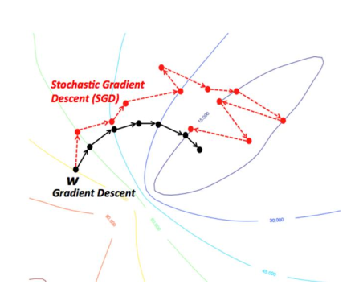
batch: 计算的更准。
not batch: 计算的更快。
折中的为： mini batch
精度和速度一般难以兼顾。
理论数学不同于工程数学，最完美的实现不是最优的实现，
花费太多的资源来换取微小的准确率的提升，在工程中是不可取的。
如果资源无限，也就没有了bgd的所谓的优化。
正如lisp中所言，无限的资源换取无限的逻辑简化(最高等级的抽象)。
4.8.5 simple code
4.9 逻辑回归 (Logistic Regression)
天然解决二分类问题的。 (0,1)
4.9.1 目标函数
目标函数：
$$
\theta_{0}x_0 + \theta_{1}x_1 + \cdots + \theta_{n}x_n = \sum_{x=1}^{n}\theta_{i}x_i = \theta^{T}x
$$
sigmoid函数，（取值范围为[0,1]），单调，所以用它将负无穷到正无穷映射到[0,1]区间：
$$
g(x)=\frac{1}{1 + e^x}
$$
组合后的目标函数为：
$$
h_{\theta}(x) = \frac{1}{1 + e^{-\theta^{T}x}}
$$
4.9.2 损失函数
以概率的角度理解:
$$
P(y=1|x,\theta) = h_{\theta}(x)
$$
$$
P(y=0|x,\theta) = 1 - h_{\theta}(x)
$$
设计损失函数：
$$
P(y|x,\theta) = (h_{\theta}(x))^{y}(1 - h_{\theta}(x))^{1-y}
$$
i.e.
$$
L(\theta) = \prod_{i=1}^{m}P(y|x,\theta) = \prod_{i=1}^{m}(h_{\theta}(x))^{y}(1 - h_{\theta}(x))^{1-y}
$$
注意y次方和1-y次方，这样设计函数，无论y取0或1，都满足概率公式。
为了简化计算，对两边取对数：
$$
l(\theta) = lnL(\theta) = \sum_{i=1}^{m}(y_{i}lnh_{\theta}(x_{i}) + (1-y_{i})ln(1-h_{\theta}(x_{i})))
$$
为了求导方便，也为了消除样本个数的影响：
$$
J(\theta) = -\frac{1}{m}l(\theta)
$$
为什么损失函数越小越好？
损失函数为两个概率的乘积，而两个概率和为1。
我们希望的是，y为1时，h的概率接近1，1-h的概率接近0；
y为0时，h的概率接近0，而1-h的概率接近1，在这两种情况下，损失函数都是接近0的。
损失函数越大，表示判断正确的概率越低。
4.9.3 梯度下降求最优参数
对\(\theta\) 中的\(\theta_j\) 求偏导（未推导,思想是一样的）：
$$
\frac{\partial}{\partial \theta_j}J(\theta) = \frac{1}{m}\sum_{i=1}^{m}(h_{\theta}(x_i) - y_i)x^{j}_i
$$
进行梯度下降迭代求解：
$$
\theta_j = \theta_j - \frac{\partial}{\partial \theta_j}J(\theta) = \theta_j - \alpha\frac{1}{m}\sum_{i=1}^{m}(h_{\theta}(x_i) - y_i)x^{j}_i
$$
其中\(\alpha\) 为学习率。
4.9.4 逻辑回归多分类的实现：
0 -> (yes, no)
1 -> (yes, no)
2 -> (yes, no)
选择概率最大的作为该分类。
即，如果有三类，以此判断出属于第一类的概率和不属于第一类的概率，
属于第二类和不属于第二类的概率，
属于第三类和不属于第三类的概率，
从中选择最大的概率作为该类的分类。
4.9.5 SVM vs LR
svm是从几何角度构建目标函数和损失函数，计算复杂，适合小样本量，准确度。
lr是从概率的角度构建目标函数和损失函数，计算简单，适合大样本，准确度不如svm。
4.10 Softmax Regression
解决多分类问题。
4.10.1 目标函数
假设函数对于每一个样本估计其所属的类别的概率为$p(y=j|x)
则目标函数为：
其中，y总共有k个类别，x为样本。
矩阵前面的系数是为了归一化。
则样本x所属的类别为矩阵中概率最大的那个类别。
4.10.2 DONE 损失函数
引入辅助函数：
损失函数为交叉熵：
m为样品本数量，k为类别数，ln是为了将概率的累乘变为概率的累加。
负号是为了从最大变为最小，还是求解极小值。
上式表示，对所有样本所有类别的概率进行累乘。
因为辅助函数的存在，当样本的类别为j时，即使对所有类别进行了累加，其实仅仅保留了j类别的项，其余非j类别的项都为0.
4.10.3 TODO 梯度下降法求解
4.11 EM
4.11.1 聚类
将物理或抽象对象的集合划分成相似的对象类的过程称为聚类。
4.11.2 实验
实验：
有三枚硬币，a,b,c,
先抛a，如果a正面，则抛b，
如果a反面，则抛c，
将b或c的结果记录，正面为1，反面为0，
现在有结果 [0,1,0,1]
估计abc是多少。
4.11.3 分析
其中a为隐藏变量，问题是带有隐藏变量的MLE。
（它代表了所有的无监督的聚类算法）
4.11.4 E - 隐藏变量的分布
假设abc已知，结果0或1为\(y_i\) .
在abc和\(y_i\) 发生的前提下，抛硬币b的概率为：
其中：
所以：
4.11.5 M - 参数最大化
通过求导，求解。
4.11.6 例子
K-means算法
分布：
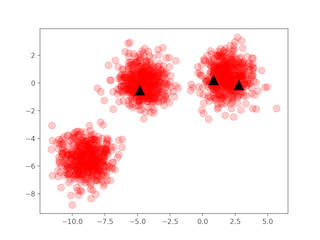
隐藏的变量为：样本点是属于哪一类的。
4.11.7 DONE code
""" EM algorithm """ import numpy as np import matplotlib.pyplot as plt # 1000 sample # three coin: A B C a_true = 0.3 b_true = 0.2 c_true = 0.8 def make_sample(num, p1, p2, p3): data = [] for itr in range(num): # coin A A = np.random.random() if A < p1: # coin B B = np.random.random() if B < p2: data.append(1) else: data.append(0) else: # coin C C = np.random.random() if C < p3: data.append(1) else: data.append(0) return np.array(data) data = make_sample(1000, a_true, b_true, c_true) plt.subplot(211) plt.hist(data) # assumption a, b, c = .4, .5, .7 for step in range(20): # E-step m1 = a * b ** data * (1 - b) ** (1 - data) m2 = (1 - a) * c ** data * (1 - c) ** (1 - data) mu = m1 / (m1 + m2) # M-step a = np.mean(mu) b = np.sum(mu * data) / np.sum(mu) c = np.sum((1 - mu) * data) / np.sum(1 - mu) print('step: {step}, true: ({a_true:.2f}, {b_true:.2f}, {c_true:.2f}), pred: ({a:.2f}, {b:.2f}, {c:.2f})'.format(**locals())) # predict data = make_sample(1000, a, b, c) plt.subplot(212) plt.hist(data) plt.show()
输出结果为：
step: 0, true: (0.30, 0.20, 0.80), pred: (0.40, 0.51, 0.71) step: 1, true: (0.30, 0.20, 0.80), pred: (0.40, 0.51, 0.71) step: 2, true: (0.30, 0.20, 0.80), pred: (0.40, 0.51, 0.71) step: 3, true: (0.30, 0.20, 0.80), pred: (0.40, 0.51, 0.71) step: 4, true: (0.30, 0.20, 0.80), pred: (0.40, 0.51, 0.71) step: 5, true: (0.30, 0.20, 0.80), pred: (0.40, 0.51, 0.71) step: 6, true: (0.30, 0.20, 0.80), pred: (0.40, 0.51, 0.71) step: 7, true: (0.30, 0.20, 0.80), pred: (0.40, 0.51, 0.71) step: 8, true: (0.30, 0.20, 0.80), pred: (0.40, 0.51, 0.71) step: 9, true: (0.30, 0.20, 0.80), pred: (0.40, 0.51, 0.71) step: 10, true: (0.30, 0.20, 0.80), pred: (0.40, 0.51, 0.71) step: 11, true: (0.30, 0.20, 0.80), pred: (0.40, 0.51, 0.71) step: 12, true: (0.30, 0.20, 0.80), pred: (0.40, 0.51, 0.71) step: 13, true: (0.30, 0.20, 0.80), pred: (0.40, 0.51, 0.71) step: 14, true: (0.30, 0.20, 0.80), pred: (0.40, 0.51, 0.71) step: 15, true: (0.30, 0.20, 0.80), pred: (0.40, 0.51, 0.71) step: 16, true: (0.30, 0.20, 0.80), pred: (0.40, 0.51, 0.71) step: 17, true: (0.30, 0.20, 0.80), pred: (0.40, 0.51, 0.71) step: 18, true: (0.30, 0.20, 0.80), pred: (0.40, 0.51, 0.71) step: 19, true: (0.30, 0.20, 0.80), pred: (0.40, 0.51, 0.71)
绘制图形为：
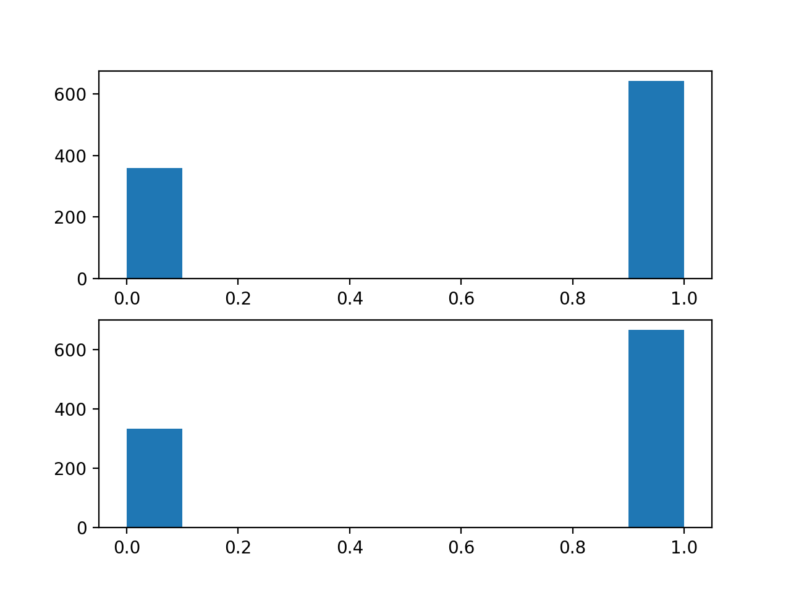
分析结果可知：
结果具有多解性，不同的概率值也可取得和实际结果相似的分析结果。
4.11.8 多解性(how to understand this?)
EM本身具有多解性。
解的稳定性：
给不同的初始值，得到的结果是确定的。
4.12 LDA
4.13 协同过滤推荐(collaborative filtering)
4.13.1 used-based CF
4.13.2 item-based CF
4.13.3 model-based CF
5 距离
在聚类算法中，比较重要的是距离的度量.
5.1 Euclidean Distance
$$
(x_1 - x_2)^2
$$
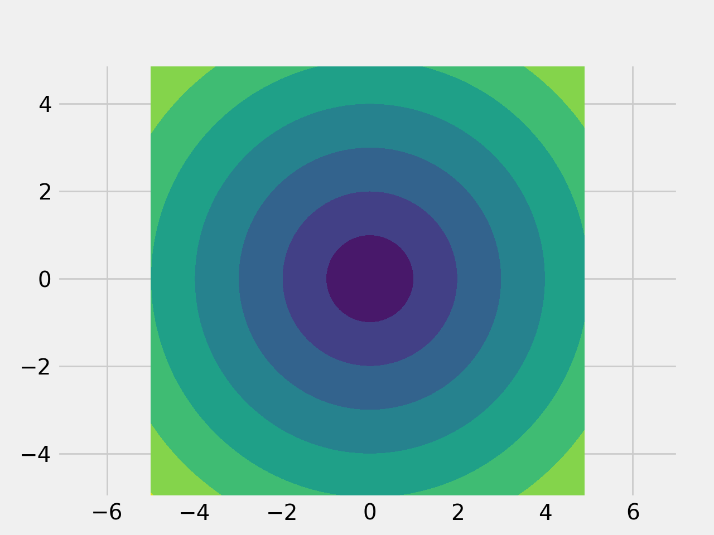
5.2 Cosine Distance
$$
\frac{x_1 \cdot x_2}{|x_1| |x_2|}
$$
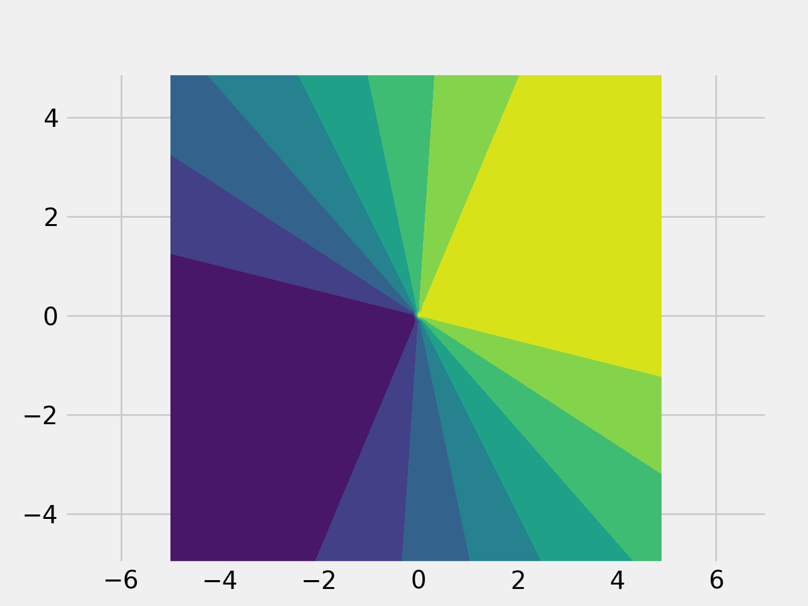
5.3 Manhattan Distance
5.4 Mahalanob Distance
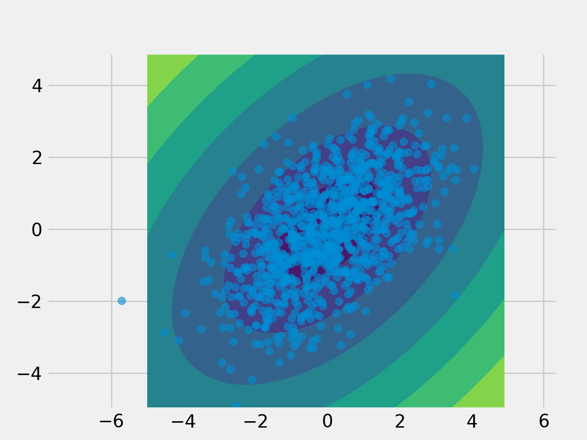
5.5 PearsonCorrelation
皮尔逊相关系数具有平移不变性和尺度不变性
计算出了两个向量（维度）的相关性。
不过，一般我们在谈论相关系数的时候，
将 x 与 y 对应位置的两个数值看作一个样本点，
皮尔逊系数用来表示这些样本点分布的相关性。
$$
\rho_{X,Y} = \frac{cov(X,Y)}{\sigma_X \sigma_Y} = \frac{E[(X - \mu_X)(Y-\mu_Y)]}{\sigma_X \sigma_Y}
$$
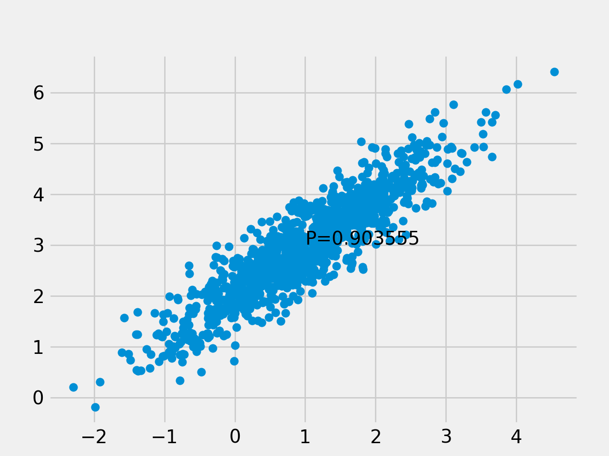
5.6 KL散度 - 相对熵
p,q是两个概率分布。
$$
KL(p||q)=\sum p(i)log\frac{p(i)}{q(i)}
$$
相对熵可以衡量两个随机分布之间的距离，当两个随机分布相同时，它们的相对熵为零，
当两个随机分布的差别增大时，它们的相对熵也会增大。
所以相对熵（KL散度）可以用于比较文本的相似度，先统计出词的频率，然后计算KL散度就行了。
5.7 交叉熵
主要用于度量两个概率分布间的差异性信息。
在信息论中，交叉熵是表示两个概率分布p,q，其中p表示真实分布，q表示非真实分布，
在相同的一组事件中，其中，用非真实分布q来表示某个事件发生所需要的平均比特数。
假设现在有一个样本集中两个概率分布p,q，其中p为真实分布，q为非真实分布。
假如，按照真实分布p来衡量识别一个样本所需要的编码长度的期望为：
$$
H(p)= \sum p(i)\cdot log(\frac{1}{p(i)})
$$
但是，如果采用错误的分布q来表示来自真实分布p的平均编码长度，则应该是：
$$
H(p,q)= \sum p(i)\cdot log(\frac{1}{q(i)})
$$
此时就将H(p,q)称之为交叉熵。
5.8 Hamming Distance
两个等长字符串s1与s2之间, 将其中一个变为另外一个所需要作的最小替换次数。
5.9 Edit Distance
指两个字串之间，由一个转成另一个所需的最少编辑操作次数。
许可的编辑操作包括：将一个字符替换成另一个字符，插入一个字符，删除一个字符。
5.10 Chebyshev Distance
max(|x1-x2|,|y1-y2|,…)
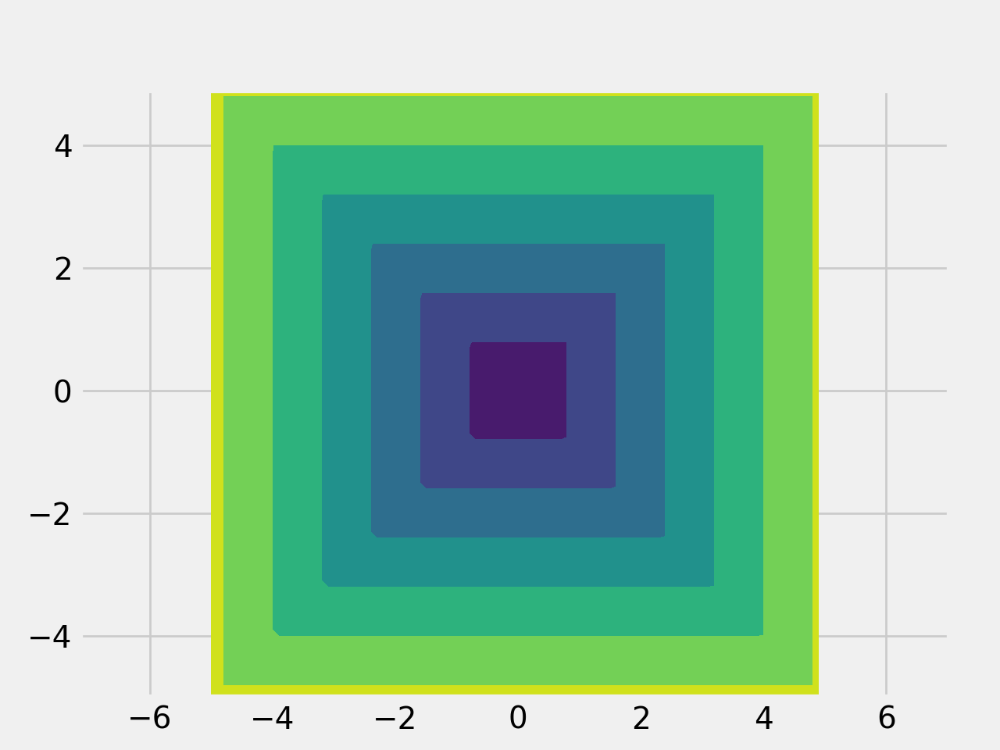
5.11 Inner Distance
两个向量相乘。
$$
x_1 \cdot x_2
$$
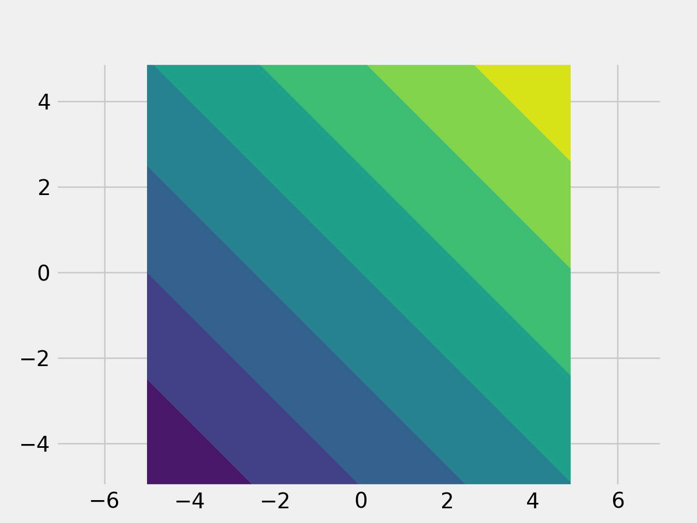
5.12 Jaccard Distance
举个例子来说:
电影基数非常庞大
用户看过的电影只占其中非常小的一部分
如果两个用户都没有看过某一部电影（两个都是 0）
并不能说明两者相似
反而言之，如果两个用户都看过某一部电影（序列中都是 1）
则说明用户有很大的相似度。
在这个例子中，序列中等于 1 所占的权重应该远远大于 0 的权重
$$
\frac{c_{TF} + c_{FT}}
{c_{TT} + c_{FT} + c_{TF}}
$$
where \(c_{ij}\) is the number of occurrences of
\(\mathtt{u[k]} = i\) and \(\mathtt{v[k]} = j\) for \(k < n\) .
Parameters:
u : (N,) array_like, bool
v : (N,) array_like, bool
6 正则化
- 为了防止过拟合，你和过程中通常倾向于让权值尽可能小，即降低模型复杂度
- 参数值小的模型比较简单，能适应不同的数据集，在一定程度上避免了过拟合现象
- 能减小样本数据对规律的扰动
过拟合导致的原因为：有些特征，训练集中有，而训练集中没有。
6.1 L-P范数
距离定义是一个宽泛的概念，只要满足非负，自反，三角不等式就可以称为距离。
范数是一种强化了的距离概念，在定义上多了一条数乘的运算法则。
L-P范数是一组范数，定义如下：
范数示意图如下：
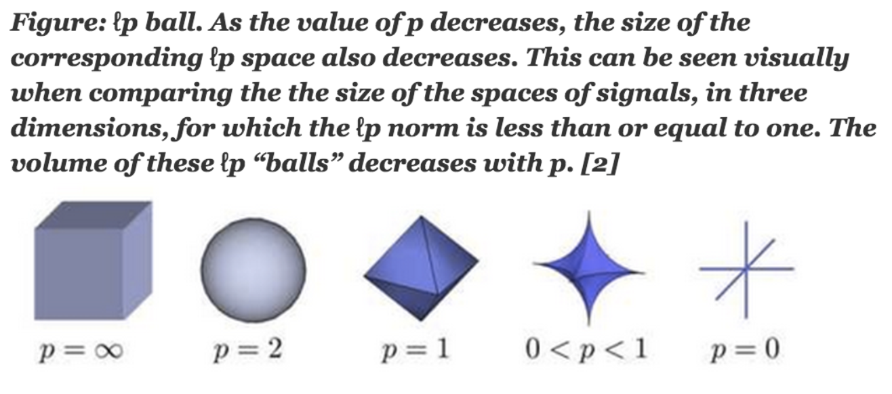
动态变化图如下：
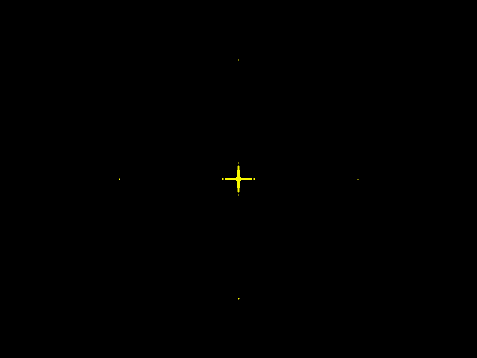
6.2 L0
L0并非一个真正的范数，主要用来衡量向量中非零元素的个数。
6.3 L1
6.4 L2
6.5 正则化求解
带约束极值求解问题，都通过拉格朗日变换，转化为无约束问题的求解。
6.6 Lasso
线性回归模型加上L1约束
6.7 Ridge
线性回归模型加上L2约束
7 牛顿法
牛顿法比梯度下降法收敛更快（使用了二阶导数）（迭代次数更少）
代价就是： 计算更复杂
牛顿法要求函数具有二阶连续可导。
泰勒展开：
$$
f(x) = \frac{f(x_0)}{0!} + \frac{f^{'}(x_0)}{1!}(x-x_0) + \frac{f^{''}(x_0)}{2!}(x-x_0)^2 + \cdots + R_{n}(x)
$$
牛顿法使用的为：
$$
f(x) \approx \frac{f(x_0)}{0!} + \frac{f^{'}(x_0)}{1!}(x-x_0) + \frac{f^{''}(x_0)}{2!}(x-x_0)^2
$$
函数两边对x求导：
$$
0 = f^{'}(x_0) + f^{''}(x_0)(x-x_0)
$$
进而求得：
$$
x = x_0 - \frac{f^{'}(x_0)}{f^{''}(x_0)}
$$
以上就是迭代方式。
同样的推导方式推广到n纬，导数换为偏导数。
8 频率学派和Bayes学派
频率学派和Bayes学派最大的不同在于先验概率的不同。
频率学派认为，造成这个实验的结果是独立的，根据这个结果计算得到这个结果的最优化解。
Bayes学派认为，有先验概率的存在，实验的结果无法代表规律的本身，这是逼近规律本身，而是在先验规律的基础上对规律进行修正，使规律更符合实验结果。
当先验概率为均匀分布时，相当于最大熵分布，最低信息含量，
这个时候，Bayes学派退化为频率学派。
8.1 最大似然估计
maximum likelihood estimation
MLE是频率学派求解概率的假设依据。
即，在结果发生的前提下，假设概率为\(P(\theta)\) ，
那么既然这个结果发生了，就认为\(P(\theta)\) 应该使这个结果发生的概率最大。
进而求得在这个结果发生的前提下，概率的值。
8.2 最大后验概率
maximum a posteriori posti 'ri o ri
在加入先验概率的情况下，求解MLE
8.3 规律与实验次数
我们是通过实验结果去推测隐含的规律，
当实验次数越多的时候，相当于对规律限制的条件越多，
那么规律越精确。
如下图所示：
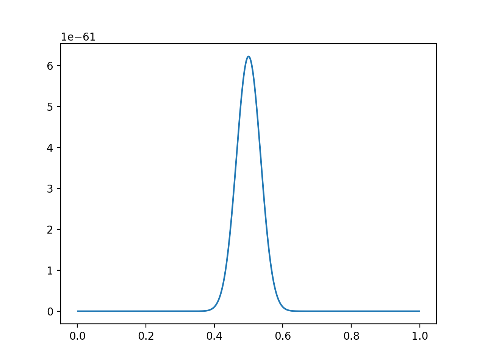
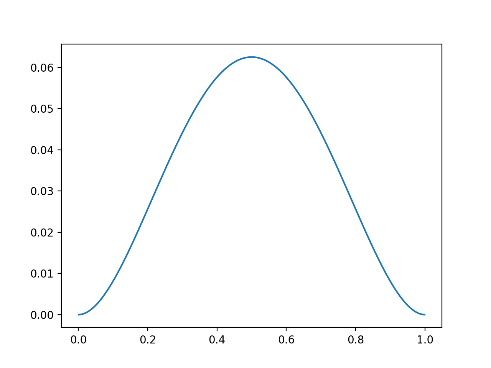